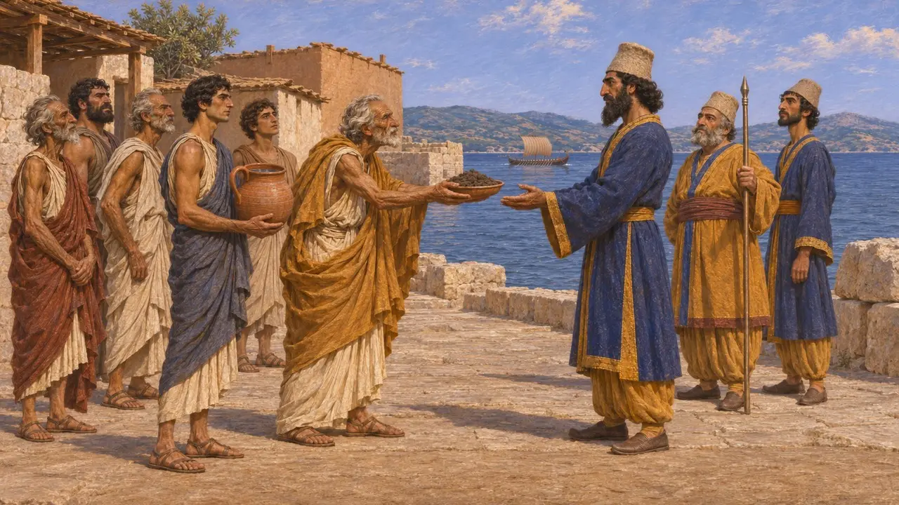
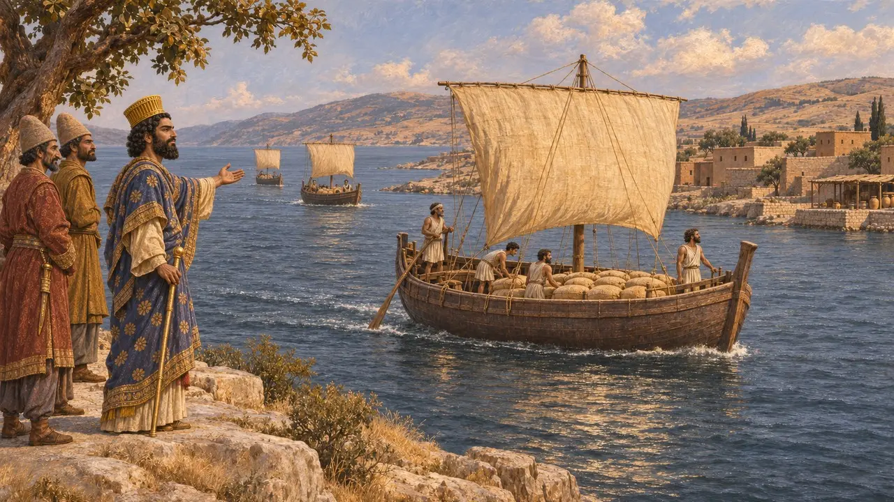
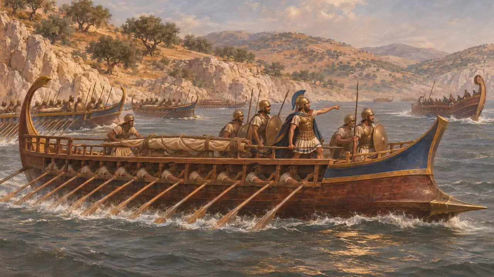
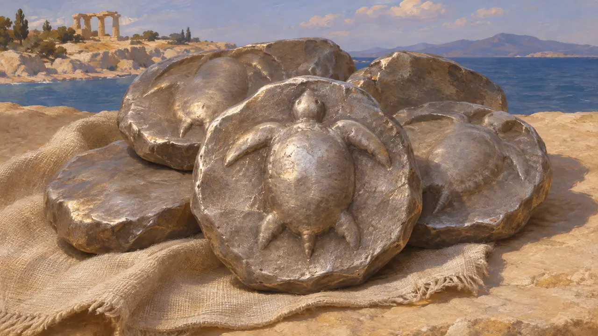

Égine
Île dorienne du golfe Saronique, rivale d'Athènes et dotée des meilleurs navires à Salamine, 491-480 av. J.-C.
Égine est une île du golfe Saronique, entre l'Attique et le Péloponnèse. C'était une grande cité marchande, qui frappait ses propres pièces d'argent, les tortues. En 491 av. J.-C., elle donna la terre et l'eau à Darius, ce qui dressa Athènes et Sparte contre elle, mais en 480 av. J.-C. ses navires furent jugés les meilleurs de la flotte grecque à Salamine.
Dans le jeu : Égine est nommée dans le niveau des Thermopyles, où les navires céréaliers de la mer Noire passent devant le Roi pour la rejoindre, ainsi que dans les infobulles et les articles consacrés aux Grecs.

La terre et l'eau
Récit antiqueHérodote raconte que les insulaires donnèrent la terre et l'eau aux hérauts de Darius, parmi eux les Éginètes. Les Athéniens les accusèrent devant Sparte de vouloir se joindre aux Perses contre Athènes, et le roi Cléomène se rendit à Égine pour s'emparer des responsables.
Herodotus 6.49-50, 6.73

Les navires à grain
Récit antiqueÀ Abydos, Xerxès vit des navires qui transportaient du grain de la mer Noire, à travers l'Hellespont, vers Égine et le Péloponnèse. Il les laissa passer, disant qu'ils portaient du grain là où il se rendait lui-même.
Herodotus 7.147

Au mieux à Salamine
Récit antiqueÉgine envoya ses trente meilleurs navires à Salamine et en garda d'autres chez elle pour défendre l'île. Hérodote dit que, dans la bataille, les Éginètes furent les plus remarqués de tous les Grecs, les Athéniens venant ensuite, et que l'Éginète Polycrite fut cité parmi les plus braves.
Herodotus 8.46, 8.91-93

Les monnaies à la tortue
Dans les sourcesÉgine frappa quelques-unes des plus anciennes pièces d'argent de la Grèce continentale, des statères marqués d'une tortue de mer, à partir de 550 av. J.-C. environ. Son étalon pondéral fut employé dans une grande partie de la Grèce. Ces pièces nous sont parvenues en grand nombre.
Head, Historia Numorum, Aegina; C. M. Kraay, Archaic and Classical Greek Coins, 1976
Sources
- Herodotus 6.49-50, 6.73, 7.147, 8.46, 8.91-93
- C. M. Kraay, Archaic and Classical Greek Coins, 1976